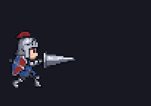
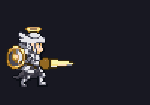
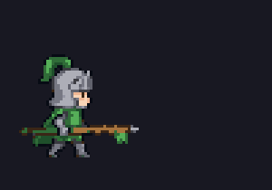
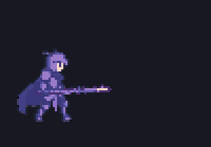
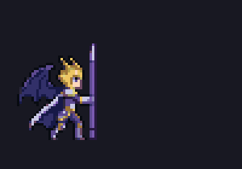
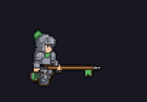
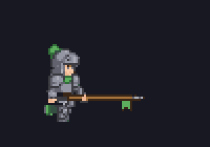
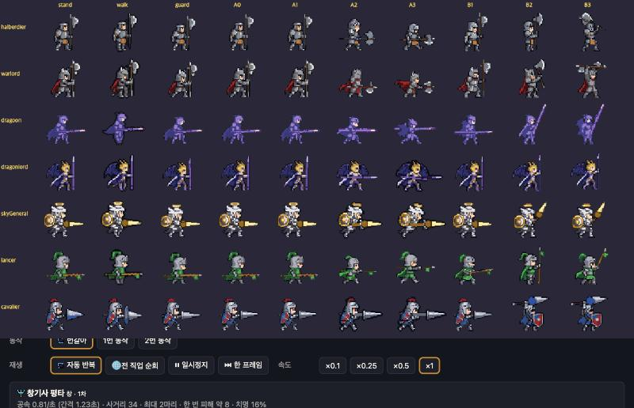

창기사 계열 평타 보강 — 결과
결과 보고 · 사용자 확인 (10-23) · 0.31.4 배포 · 스펙 docs/specs/legacy-class-sheets.md "남은 31회 계획"
이번 유료 11회 (남은 20, 11-13 까지)
그중 3회는 저장 실패로 잃음, 3회는 못 쓴 키
대부분 코드로 무료 처리
결과 요약
| 직업 · 줄 | 전 | 후 | 방법 | 자동 검수 |
|---|---|---|---|---|
| 랜서 평타A |  | 코드 (몸·랜스 분리, 윗몸 회전, 걷기 다리) | pass 3.57 → 지적 반영 | |
| 천마장군 평타A |  | 코드 (랜서와 같음) | pass 3.71 | |
| 창기사 평타A |  | 코드 — 1번 예비동작 + 2~4번 창 자루 갈색으로 통일 | pass 3.57 → 자루 색 맞춤 | |
| 용기병 평타A |  | 코드 — 1번 예비동작 | pass 3.71 | |
| 용황 평타A |  | 코드 — 정면으로 돌던 3·4번을 옆 찌름에서 | pass 3.57 | |
| 용황 평타B | 유료 편집 1장(옆모습 창 세움) + 코드로 들기·정점·내려찍기 | pass 3.57 (1차 fix 3.14) → 정점·각도 키움 | ||
| 창기사 걷기 |  | 유료 걷기 3회 — 평타와 같은 새 디자인으로 | pass 3.86 | |
| 창기사 대기 |  | 코드 (평타 시작 자세에서) · 전투 대기·피격·쓰러짐·앉기도 | — | |
| 7종 공통 | 평타 4번 장(3번 장 반복)을 한 칸 밀어붙인 장으로 — 명중 뒤 멈칫 줄임 (코드) | — | ||
게임 렌더러로 그린 모습

유료 사용 내역 (이번 작업 11회)
| 호출 | 회 | 결과 |
|---|---|---|
| 랜서 키 편집 (첫 시도) | 3 | 결과 저장 폴더가 없어 그림을 잃음 — 제 코드 실수, 고침 |
| 랜서 키 편집 (다시) | 3 | 원본과 거의 같아 못 씀 → 코드로 대체 |
| 용황 키 편집 (찌름·들기) | 2 | 찌름은 못 씀, 들기가 옆모습으로 나와 평타B 의 바탕으로 씀 |
| 창기사 걷기 | 3 | 씀 |
사고 1건: 작업 중 시트 축소 도구(rescale.py)를 불러오기만 했는데 전체 시트 35장이 예전 원본에서 다시 만들어졌습니다. 마지막 커밋으로 모두 되돌리고 이번 작업만 스크립트로 다시 적용했습니다. 지금 바뀐 시트는 창기사 계열 7종뿐입니다.
남은 흠 (선택)
- 천마장군·용황 평타A: 뒤로 당기는 장이 약함
- 용황 평타B: 창 색이 준비 장보다 조금 어두움
- 창기사 걷기: 보폭이 작아 1배에서 걷는 느낌이 약함
확인: 스킬 시험장 평타 — 직업 버튼으로 랜서·천마장군·창기사·용기병·용황을 바꿔 보세요.